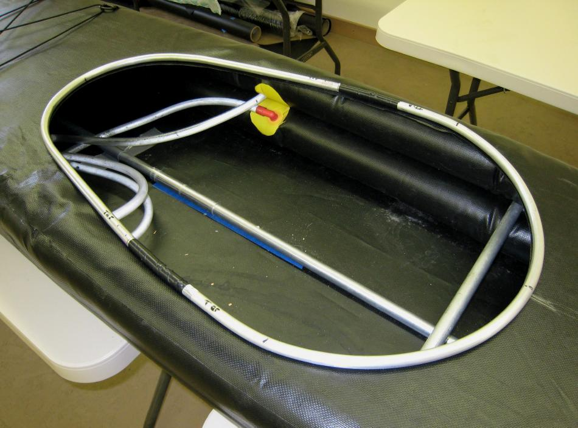

| Sonnet ( Coaming) | Menu Previous Page Next Page |
|

Assemble the two part aluminum coaming and center it on the deck with the back of the coaming placed at the station 4 location. This position places it at 18" (457mm ) aft of the kayaks Center of Balance (LCB). Mark the outline of the coaming "inside" with a pencil and cut out this area of the deck with a knife or scissors.
|
|